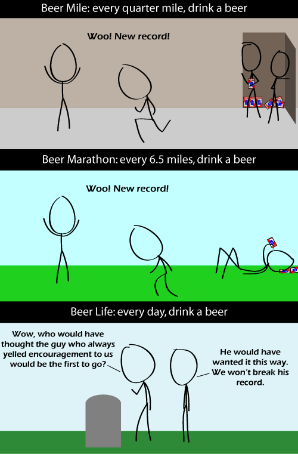

Comic JK 606
When I Feel Like It
⇤
<
?
>
⇥

⇤
<
?
>
⇥
Forum
.
RSS
.
Digg
.
Facebook
.
Reddit
.
Twitter
.
Stumbleupon
Enter your thoughts on number 606 here. Please, no spamming, trolling, or running. > What? No running? Oooh. :( >>Yeah, but it doesn't say anything about "no drinking" Beer your mother: Every time your mother is with a dorky college boy, drink a beer. I doubt you can handle that much booze. Wouldn't _A_ beer a day make him live longer? The latest studies show that people who have 3 drinks a day live the longest, longer than the 1 drink a day folks, but the non-drinkers have the shortest life expectancy. >Are these studies done by professionals? Did you check their credentials? Never trust the internet. >>The studies I've read do not include beer. A glass of wine or a daily shot of certain harder drinks appear to be beneficial, but the second round of studies to confirm this haven't been completed. Gotta wait another generation for those...;) >>>Just completed a class on health effects of alcohol. The three drink thing has been shown and beer was included. >>>> Red wine contains resveratrol, an antioxidians, and it has been shown that moderate consumption increases life expectancy. However, more than 1 glass (~ 5 american "beers" or 2 good beers) every other day is detrimental. >>>>>Can you give me the name(s) of good beer companies? I wanna know if I've been drinking the good stuff :) >>>>>>German Pilsener almost always qualifies as good beer. Definitely better than the english substitute for beer... >>>>>>>If you're drinking North American stuff, stay away from the big breweries. Microbreweries are much better, though tend to be localized. Guinness is among the best stouts, though it's pretty darn strong for most people. Belgian and German imports also tend to be excellent. Microbrews are the most affordable choice in North America, though - all the imports are pretty expensive. >> Some good Canadian beers that I can suggest are Alexander Keith's IPA and Big Rock Traditional Ale >>Guiness is for sissies, but it is like a multivitamins The guy shouting encouragement isn't drinking, hence he dies first. >Truer words have never been spoken. The guy shouting encouragement isn't getting any exercise. >or his constant shouting got him attacked by a gang of irate noise-abatement activists... or Brian Blessed... ( or should I say "BRIAN BLESSED!!!!" )